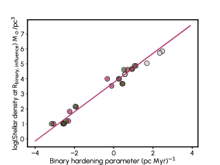
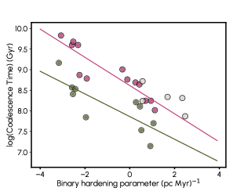
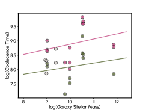
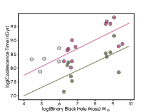
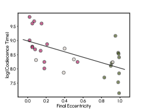
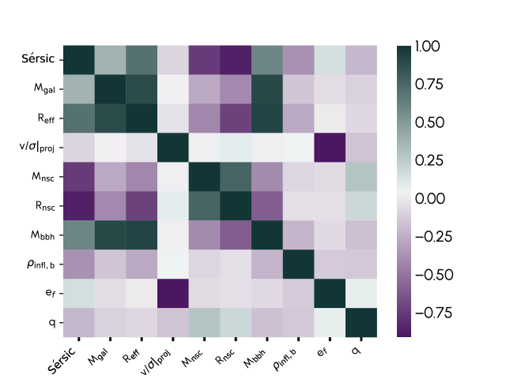
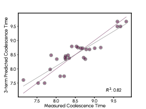
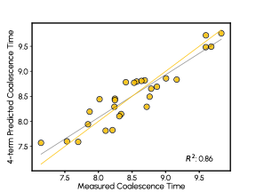
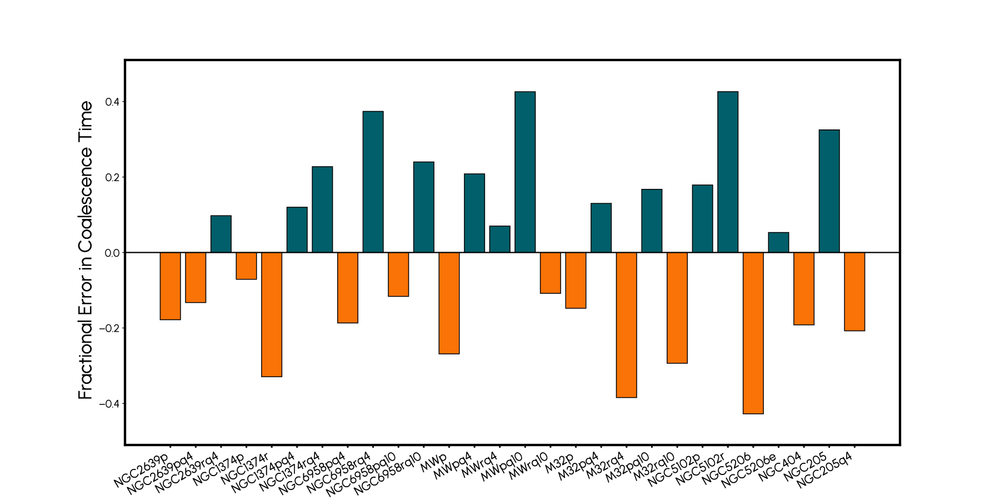
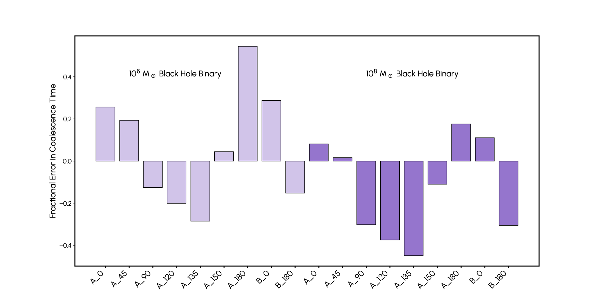

علاقة عملية بين أزمنة اندماج ثنائيات الثقوب السوداء وخصائص المجرات المضيفة
الملخص
على مدى السنوات 15 الماضية، بيّنت الأدلة بوضوح أن المقاييس الزمنية لاندماج ثنائيات الثقوب السوداء فائقة الكتلة (MBH) تعتمد اعتمادا قويا على الخصائص البنيوية والحركية لمجراتها المضيفة. فالكثافة النجمية، ومحتوى الغاز، والشكل، والحركيات تؤدي كلها دورا، وتتآلف بطرائق لاخطية في التأثير في تطور الثنائية. كما أن خصائص الثنائية نفسها، مثل الشذوذ المركزي، ونسبة الكتلة، والمستوى المداري، مهمة كذلك. وهذا يجعل تقدير معدلات اندماج ثنائيات MBH الكونية بدقة، أو توليد مجالات لمعدلات الاندماج تعكس توزع المجرات المضيفة والمدارات، أمرا غير بسيط. وباستخدام مجموعة واسعة من محاكاة الأجسام المباشرة عالية الدقة، التي تستند فيها هيئة كل مجرة مضيفة وبنيتها وحركياتها مباشرة إلى الرصد، نرسم خريطة للمقاييس الزمنية لاندماج ثنائيات MBH عبر مدى من المجرات المضيفة ومدارات ثنائيات MBH. وينتج عن ذلك طيف ملائم من علاقات القياس لتحديد المقاييس الزمنية لاندماج ثنائيات MBH، وكذلك مدى هذه المقاييس الزمنية، بوصفها دوال في المرصودات الأساسية. ويمكن استخدام علاقات القياس هذه بسهولة نموذجا دون شبكي في الدراسات الكونية أو شبه التحليلية، مثلا لنمذجة معدلات الأحداث لدى LISA أو توقيت النجوم النابضة.
keywords:
فيزياء الثقوب السوداء – المجرات: الحركيات والديناميكيات – المجرات: النوى – المجرات الدورانية – الموجات الثقالية – الطرق: عددية1 مقدمة
من المتوقع أن تكشف سماء الموجات الثقالية منخفضة التردد عن جمهرة من ثنائيات الثقوب السوداء فائقة الكتلة (MBH) في أثناء التفافها الحلزوني واندماجها عميقا داخل ألباب المجرات في أنحاء الكون. وربما تكون مصفوفات توقيت النجوم النابضة (Taylor, 2021) قد رصدت بالفعل الجزء الأعلى كتلة من هذه الجمهرة مع الرصد 2023 لخلفية موجات ثقالية عشوائية في نطاق تردد النانوهرتز، وهي متسقة مع مجموع ثنائيات MBH كثيرة على مدارات تمتد عقودا (Agazie et al., 2023a; EPTA Collaboration et al., 2023; Reardon et al., 2023; Xu et al., 2023; Miles et al., 2025). ومع أن رصد توقيت النجوم النابضة لخلفية موجات ثقالية عند النانوهرتز واضح، فثمة بعض التوتر بين أرصاد توقيت النجوم النابضة والنماذج النظرية، لأن الخلفية المقيسة أعلى شدة من المتوقعة؛ فإذا كانت الخلفية العشوائية تنتج حصرا من ثنائيات MBH، فقد تشير إلى جمهرة أعلى كتلة، و/أو أكثر عددا، و/أو أسرع تطورا مما كان متوقعا (Agazie et al., 2023b; EPTA Collaboration et al., 2024; Laal et al., 2025). ومع هوائي مقياس التداخل الليزري الفضائي (LISA)، وهو مرصد موجات ثقالية فضائي تابع لوكالتي ESA/NASA ومقرر إطلاقه في 2035، يتوقع أن يكون اندماج ثنائيات قابلا للرصد حتى انزياح أحمر 20 وبنسب إشارة إلى ضجيج تبلغ المئات (Colpi et al., 2024)، الأمر الذي سيساعدنا في تركيب صورة أكمل لتجمع MBH عبر كامل طيف الكتل وعبر الزمن الكوني.
يتطلب استنتاج نشأة MBH وتطورها من أرصاد LISA وتوقيت النجوم النابضة تنبؤات عالية الموثوقية بمعدلات اندماج MBH وديموغرافيتها (مثلا Holley-Bockelmann et al., 2010; Chen et al., 2017; Taylor et al., 2017; Colpi et al., 2019, والمراجع الواردة فيه). غير أن تنبؤات معدلات اندماج MBH تمتد على رتبتين عشريتين (Amaro-Seoane et al., 2023)، ويعود معظم هذا الارتياب إلى الارتياب في المقياس الزمني لاندماج MBH (مثلا Merritt, 2013, والمراجع الواردة فيه). وتكثر أسباب ذلك: فالمحاكاة الكونية والنماذج شبه التحليلية لا تستطيع أن تدرج فيزياء الغاز والنجوم والجاذبية ذات الصلة عبر 12 رتب عشرية في المقياس المكاني بينما تشق MBH طريقها من مجرات منفصلة إلى الاندماج، ولذلك يجب على كل دراسة أن تختار الفيزياء التي ستقاربها. وعلى نحو عام، يقود الاحتكاك الديناميكي MBH إلى مركز المجرة، حيث تلتقي وتكوّن ثنائية. وبعد ذلك، يقلص سحب الغاز وتشتت النجوم مدار الثنائية بمعامل إلى أن يهيمن إصدار الموجات الثقالية وتلتحم الثنائية (Begelman et al., 1980).
ثمة ممارسة شائعة تتبناها المحاكاة الكونية تتمثل في ترحيل MBH اصطناعيا نحو مركز جهد مجرتها المضيفة، بما يكافئ أساسا مساواة معدل اندماج MBH بمعدل اندماج المجرات (مثلا Sijacki et al., 2015; Schaye et al., 2015; Huang et al., 2018). وتهمل هذه الممارسة ديناميكيات الثنائية والتأخيرات المصاحبة التي قد تنجم عن العملية. أما التقديرات الأكثر تطورا فتدرج الاحتكاك الديناميكي على الثقب الأسود الساقط في أثناء التشغيل أو من خلال تحليل لاحق للمعالجة (مثلا Micic et al., 2011; Just et al., 2011; Antonini and Merritt, 2012; Tremmel et al., 2015; Dosopoulou, 2018; Barausse et al., 2020; Ma et al., 2023). وفي المحاكاة الكونية، يجلب ذلك MBH إلى داخل الدقة المكانية للمحاكاة ( pc)؛ وعند هذا الفصل لا تكون MBH مرتبطة طاقيا كثنائية، لكنها تُجبر مع ذلك على الاندماج (مثلا Tremmel et al., 2018; Genina et al., 2024). وقد تحقق حديثا تقدم هائل في هذا المجال بفضل الإتاحة العامة لحزمة KETJU، التي تغير طريقة معالجة التآثرات الثقالية بين جسيمات الثقوب السوداء فائقة الكتلة والجسيمات النقطية غير التصادمية بحيث لا تعود الحاجة إلى تليين الجاذبية في التآثرات القريبة (Mannerkoski et al., 2023)؛ وفي الوقت الراهن تمنع كلفة تقنية الانتظام استخدامها في أحجام كونية كبيرة منتظمة، غير أن أداء KETJU في محاكاة التكبير وفي اندماجات المجرات المعزولة يجعلها واعدة جدا للمستقبل (مثلا Rawlings et al., 2025; Attard et al., 2024; Partmann et al., 2024).
لم يطبق التطوير الصريح لـ MBH خلال طور التشتت النجمي داخل محاكاة كونية، ولذلك اقترح Sesana and Khan (2015) وصفة لتقدير عمر ثنائية MBH اعتمادا على مجموعة من محاكاة الأجسام وتجارب التشتت. وقد اعتمدت وصفتهم على الكثافة النجمية المركزية وتشتت السرعات عند نصف قطر تأثير ثنائية MBH. واقترح Vasiliev et al. (2015) نموذجا مشابها استنادا إلى اندماجات النوى المجرية ذات النتوءات المركزية. وقد استُخدمت هذه الوصفات على نطاق واسع في النماذج شبه التحليلية وفي المعالجة اللاحقة للمحاكاة الكونية لتقدير عمر ثنائية MBH في المرحلة اللاحقة لاندماج المجرات (Kelley et al., 2017c; Biava et al., 2019; Volonteri et al., 2020b; Bortolas et al., 2021; Sykes et al., 2022; Chen et al., 2022; Agazie et al., 2023a; Truant et al., 2025). إلا أن كرة التأثير غير محلولة في المحاكاة الكونية، ومن ثم تُقدّر المدخلات الأساسية للوصفة باستقراء ملفات المجرة المضيفة نحو الداخل من مقاييس أكبر بمئات المرات، مما ينتج قيما غير دقيقة. ومما يزيد الأمر تعقيدا أن دراسات حديثة كثيرة أظهرت أن الخصائص الحركية والبنيوية للمجرة المضيفة، مثل الدوران (Holley-Bockelmann and Khan, 2015a; Rasskazov and Merritt, 2016; Mirza et al., 2017; Avramov et al., 2021)، والقضبان (Bortolas et al., 2022b)، والعناقيد النجمية النووية (Khan and Holley-Bockelmann, 2021; Khan et al., 2024; Mukherjee et al., 2025)، تؤدي دورا مهما في تحديد مصير الثنائية فائقة الكتلة.
هدف هذه الورقة هو إيجاد علاقة تجريبية بين زمن التحام ثنائية MBH وخصائص المجرة المضيفة والتكوين المداري. وتضحي هذه المحاولة بالفهم العميق للعمليات الديناميكية الدقيقة المؤثرة في تفاعل معين لثنائية ثقوب سوداء لصالح ملاءمة شاملة للمقياس الزمني بوصفه دالة في مرصودات يسهل نسبيا قياسها من جمهرة مجرات حقيقية أو محاكاة. ونعرض هنا نموذجا يستند إلى مجموعة من محاكاة الأجسام لتطور ثنائيات MBH في مجرات مضيفة واقعية تتضمن طيفا من السمات، مثل الدوران، وثلاثية المحاور، والعناقيد النجمية النووية المركزية، وهي سمات ثبت أنها تؤثر في المقاييس الزمنية لالتحام MBH. وتعتمد وصفتنا المحسنة على معاملات مثل الكتلة النجمية للمجرة، ونصف القطر الفعال، و، وهي معاملات يسهل الحصول عليها من المحاكاة الكونية ومن الأرصاد على السواء.
تنظم الورقة على النحو الآتي: يعرض القسم 2 السمات المستخدمة في الدراسة، بما في ذلك كيفية بناء مجموعة المحاكاة وتشغيلها؛ ويناقش القسم 3 طرائق تحديد علاقة متينة وتنبؤية بين زمن الالتحام وخصائص المجرات؛ ويعرض القسم 4 نموذجين يتنبآن بزمن الالتحام بخطأ كسري أقل من اعتمادا على الخصائص المرصودة للمجرة المضيفة والتكوين المداري للثقب الأسود؛ أما القسم 5 فيلخص النتائج، ويشير إلى المحاذير، ويرسم ملامح العمل المستقبلي.
2 البيانات والسمات
على امتداد عقد من الزمن، جمعنا مجموعة من 28 محاكاة -الأجسام المباشرة عالية الدقة لالتحام ثنائيات MBH داخل نماذج مجرات مضيفة تستند خصائصها البنيوية والحركية إلى الأرصاد. وتمتد نماذج المجرات هذه عبر مدى أنواع المجرات، من الإهليلجيات القزمة الخافتة، إلى الأقزام الكلاسيكية، إلى درب التبانة، إلى M87. وقد ظهرت كثير من هذه المحاكاة، لا كلها، في منشورات أخرى (مثلا Khan et al., 2015; Holley-Bockelmann and Khan, 2015b; Khan and Holley-Bockelmann, 2021; Khan et al., 2024)، وتستغرق عادة أشهرا من الزمن الجداري على معماريات GPU متوازية. ورغم أن عينتنا تتضمن أنظمة متعددة المكونات ذات انتفاخات وأقراص وغالبا عناقيد نجمية نووية NSCs، فإننا لم ندرج مجرات قضيبية أو غير منتظمة. ولدى معظمها قياسات واضحة لثقب أسود مركزي، مع الإقرار بأنه لا يعرف أن أيا منها يحوي ثنائيات MBH. وتركز نماذج الاتزان لدينا على المركز المجري، الذي يمتد، تبعا للنموذج، إلى نحو بضع مئات من الفرسخ الفلكي. يلخص الجدول 1 معاملات المجرة وMBH المركزي. ونؤكد أنه عندما يدرج اسم نموذج المجرة، فإن المعاملات تحددها القياسات الرصدية؛ وإلا فتختار المعاملات من توزع قياسات لتلك الفئة المجرية. في هذه الدراسة، نهتم بعزل أثر التشتت النجمي في قيادة تطور الثنائية، ولذلك فإن النماذج كلها خالية من الغاز والمادة المظلمة 11 1 في هذا القرب من المركز المجري، لا يشكل محتوى المادة المظلمة في كل الأحوال إلا بضعة في المئة من الكتلة. ننشئ تمثيلا جسيميا N-الأجسام باستخدام AGAMA (Vasiliev, 2019)، وهو يتيح لنا أخذ عينات من مدارات كل جهد بطريقة شفارتزشيلد، مع افتراض تقريب جينز لإسناد مركبات السرعة.
ترد كل عملية تشغيل في الجدول 2. وبوجه عام، نطلق ثقبا أسود ثانويا عند عدة أضعاف نصف قطر تأثير الثقب الأسود الأساسي وبشذوذ مركزي ابتدائي 0.5، إما على مدار تقدمي أو تراجعي عندما تكون المجرة الأساسية دوارة. وعند هذا الفصل نستطيع رصد الجزء الأخير من طور الاحتكاك الديناميكي، وكذلك طور اقتران الثنائية وتصليبها، ونوقف التشغيل عندما يصبح فصل الثنائية صغيرا بما يكفي لأن يصبح الإشعاع الثقالي مهما. نكامل التطور باستخدام مخطط تكامل هرمايتي من الرتبة 4 في -GPU، وهو كود N-الأجسام مباشر مسرع بوحدات GPU (Berczik et al., 2024). وتملك -GPU تليينا اختياريا لمنع تشكل الثنائيات النجمية؛ ونستخدم لتفاعلات BH-BH و فرسخ فلكي لتفاعلات نجم-نجم. أما في تفاعلات BH-نجم، فإن معامل التليين هو:
| (1) |
لما كان هدفنا هو ربط المقاييس الزمنية لاندماج MBH بخصائص المجرات والمدارات الكلية، فإن السمات المثلى هي تلك التي يمكن قياسها بسهولة نسبية بالأرصاد أو بالمحاكاة الكونية. بدأنا بالمجموعة أدناه. ومع أن كثيرا من السمات في هذه القائمة متداخلة بالتأكيد، فقد قررنا ألا ننتقي مسبقا السمات المهمة لتنبؤنا بزمن الالتحام. وفي القسم التالي، نصف معالجتنا للارتباطات بين السمات عند تحديد علاقتنا النهائية.
-
•
دليل Sérsic، n. يقيس هذا رسميا شكل ملف السطوع السطحي (Sérsic, 1963; Sersic, 1968)، ويمكن تحويله إلى ملف كثافة نجمية 3-الأبعاد، باستخدام Prugniel and Simien (1997) (انظر أيضا Terzić and Graham (2005)):
(2) حيث إن هي المسافة الشعاعية من مركز المجرة، وn هو دليل Sérsic، و هو نصف القطر الفعال. أما فهي كثافة التطبيع التي تعتمد على الكتلة الكلية للمجرة ونصف القطر الفعال. ويمكن التعبير عن دليل قانون القوة، ، والمعامل كما يأتي: ، و، من أجل (Terzić and Graham, 2005).
-
•
كتلة ثنائية الثقوب السوداء، ، وكتلة الثقب الأسود الأساسي، ، وكتلة الثقب الأسود الثانوي، ، ونسبة الكتلة، .
-
•
الكتلة النجمية للمجرة، ، ونصف القطر الفعال، . ومرة أخرى، فإن جمع هذه السمات ليس مستقلا تماما عن دليل Sérsic أعلاه ولا عن الكثافة النجمية في القسم التالي.
-
•
كتلة العنقود النجمي النووي، ، ونصف القطر الفعال للعنقود النجمي النووي، .
-
•
نسبة سرعة الدوران النجمي إلى تشتت السرعات، . قسنا هذه الكمية عند نصف قطر التأثير.
نظرنا أيضا في سمات يمكن قياسها من خلال المحاكاة العددية لكنها تكون صعبة، أو مستحيلة، الرصد. ورغم أن هذه المجموعة ستكون أقل قابلية للتطبيق الواسع، فقد أدرجناها تحسبا لتعذر التنبؤ بالمقياس الزمني لاندماج ثنائية الثقوب السوداء باستخدام المجموعة السابقة وحدها.
-
•
اتجاه المستوى المداري لثنائية الثقوب السوداء، . في تهيئتنا، تكون الزاوية بين محور الزخم الزاوي لمدار ثنائية الثقوب السوداء ومحور الزخم الزاوي للمكون النجمي في المجرة، وتمثل اتجاها تقدميا مستويا (دورانا مشتركا)، في حين تمثل اتجاها تراجعيا مستويا (دورانا مضادا). ولا تحتوي مجموعتنا المدخلة إلا على تهيئات ذات دوران مشترك أو مضاد خالصين، لكن لدينا مجموعة (الجدول 3) تغير بين -1 و1، ونستخدمها لاختبار الملاءمة. ملاحظة: جمعنا Cos و للتعبير بصورة مدمجة عن دوران المجرة كما يسقط على المستوى المداري لثنائية الثقوب السوداء، .
-
•
الكثافة النجمية المركزية الابتدائية، ، والكثافة النجمية عند نصف قطر تأثير الثقب الأسود الأساسي، ، والكثافة النجمية عند نصف قطر تأثير ثنائية الثقوب السوداء، . لاحظ أن هذه السمات مرتبطة بقوة بدليل Sérsic.
-
•
نصف قطر التصليب، ، والكثافة النجمية عند نصف قطر التصليب، . نصف قطر التصليب هو الفصل بين الثقبين الأسودين بعد تشكل الثنائية بحيث تزيد اللقاءات النجمية اللاحقة طاقة ارتباط الثنائية، أي إنها "تصلب" الثنائية. ويمكن التعبير عن نصف قطر التصليب كما يأتي: ، حيث هي كتلة الثقب الأسود الثانوي، و هو تشتت السرعات النجمية قرب الثنائية (Heggie, 1975).
- •
-
•
معامل التصليب، . نلاحظ أن مقياس معروف جيدا لمعدل انكماش مدار ثنائية الثقوب السوداء، وغالبا ما يؤخذ بديلا عن زمن الاندماج. ومن المعروف أنه شديد الارتباط بالكثافة النجمية المركزية (Quinlan, 1996).
لتوضيح المسألة على نحو أفضل، ولفحص دقة مجموعة المحاكاة لدينا، تعرض اللوحة اليسرى من الشكل 1 معامل التصليب، s، بوصفه دالة في الكثافة النجمية عند نصف قطر تأثير الثنائية، . وتشير قوة هذا الارتباط إلى أن المعدل الذي ينكمش به مدار الثنائية خلال طور التشتت النجمي مقترن مباشرة بكثافة الخزان النجمي في مخروط الفقد للثنائية (Quinlan and Hernquist, 1997)؛ وتنجح مجموعة المحاكاة لدينا في إعادة إنتاج هذه النتيجة، وهو مؤشر واعد على أنها تحل التآثرات بين ثنائية الثقوب السوداء والجسيمات النجمية الفردية. وقد يكون من المغري ربط أو مباشرة بزمن التحام الثنائية، غير أن اللوحة اليمنى من الشكل 1 تشير إلى أن زمن الالتحام تقوده فيزياء إضافية. ففي حال معامل تصليب معين، يختلف زمن الالتحام بمعامل 100؛ ويمكن تفسير معظم هذا الاختلاف بما إذا كان الثقب الأسود الثانوي يدخل في مدار تقدمي (وردي) أو تراجعي (أخضر) بالنسبة إلى دوران المجرة. ويلمح الشكل 2 كذلك إلى أن زمن الالتحام قد يوصف على أفضل وجه كمتشعب في فضاء سمات أعلى أبعادا، مع تشتت كبير واختلاف واضح في زمن الالتحام لمدارات مختلفة لثنائية الثقوب السوداء عند رسمه بوصفه دالة في الكتلة النجمية للمجرة (يسارا)، أو كتلة ثنائية الثقوب السوداء (وسطا)، أو الشذوذ المركزي للثنائية في نظام الموجات الثقالية (يمينا).
| Galaxy | Sérsic index | |||||||||
|---|---|---|---|---|---|---|---|---|---|---|
| M⊙ | M | kpc | M⊙ | pc | M⊙ | pc | ||||
| NGC2639 | – | – | ||||||||
| NGC1374 | – | – | ||||||||
| NGC6958 | – | – | ||||||||
| MW | ||||||||||
| M32 | ||||||||||
| NGC5102 | ||||||||||
| NGC5206 | ||||||||||
| NGC404 | ||||||||||
| NGC205 |
العمود 1: نموذج المجرة؛ العمود 2: دليل Sérsic للملف النجمي؛ العمود 3: الكتلة النجمية للمجرة الأساسية بوحدات M⊙، العمود 4: الكثافة النجمية المركزية بوحدات M؛ العمود 5: نصف القطر الفعال للمجرة الأساسية بوحدات kpc؛ العمود 6: نسبة سرعة الدوران إلى تشتت السرعات النجمية 3-d؛ العمود 7: كتلة العنقود النجمي النووي بوحدات M⊙؛ العمود 8: نصف قطر مقياس العنقود النجمي النووي بوحدات الفرسخ الفلكي؛ العمود 9: كتلة الثقب الأسود المركزي بوحدات M⊙؛ العمود 10: نصف قطر تأثير الثقب الأسود الأساسي بوحدات الفرسخ الفلكي؛ العمود 11: الكثافة النجمية عند نصف قطر التأثير بوحدات M.
| Galaxy Run | ||||||||
|---|---|---|---|---|---|---|---|---|
| M⊙ | M⊙ | pc | ||||||
| NGC2639-p | ||||||||
| NGC2639-p4 | ||||||||
| NGC2639-r4 | ||||||||
| NGC1374-p | ||||||||
| NGC1374-r | ||||||||
| NGC1374-p4 | ||||||||
| NGC1374-r4 | ||||||||
| NGC6958-p4 | ||||||||
| NGC6958-r4 | ||||||||
| NGC6958-p10 | ||||||||
| NGC6958-r10 | ||||||||
| MW-p | ||||||||
| MW-p4 | ||||||||
| MW-r4 | ||||||||
| MW-p10 | ||||||||
| MW-r10 | ||||||||
| M32-p | ||||||||
| M32-p4 | ||||||||
| M32-r4 | ||||||||
| M32-p10 | ||||||||
| M32-r10 | ||||||||
| NGC5102-p | ||||||||
| NGC5102-r | ||||||||
| NGC5206 | ||||||||
| NGC5206-e | ||||||||
| NGC404 | ||||||||
| NGC205 | ||||||||
| NGC205-4 |
العمود 1: عملية تشغيل المحاكاة. يطابق الاسم الأساسي نموذج المجرة الأساسية كما وصف في الجدول 1. أما اللاحقة بعد الشرطة، إن وجدت، فتعكس خصائص مدار الثقب الأسود الداخل: يشير الحرف إلى اتجاه دوران الثقب الأسود بالنسبة إلى محور الزخم الزاوي للمجرة الأساسية، ويشير الرقم إلى نسبة كتلة الثقب الأسود الأساسي إلى الثانوي. تحديدا، يرمز p إلى المدار التقدمي، وr إلى المدار التراجعي، وغياب الحرف يعني أن الأساسية لم تكن دوارة، وe يقابل عملية تشغيل ضبط فيها مدار الثقب الأسود على شذوذ مركزي أعلى بعد التصليب بقليل. لاحظ أنه إذا لم يوجد رقم، فإن الثقبين الأسودين متساويا الكتلة؛ العمود 1: كتلة الثقب الأسود الثانوي بوحدات M⊙؛ العمود 2: الكتلة الكلية لثنائية الثقوب السوداء بوحدات M⊙، العمود 3: نصف قطر تأثير ثنائية الثقوب السوداء بوحدات الفرسخ الفلكي؛ العمود 4: الكثافة النجمية عند نصف قطر تأثير الثنائية بوحدات M؛ العمود 5: معدل التصليب بوحدات pc-1/Myr؛ العمود 6: الشذوذ المركزي عند وقت تشكل الثنائية؛ العمود 7: الشذوذ المركزي في نظام الموجات الثقالية في نهاية المحاكاة؛ العمود 8: زمن التحام ثنائية الثقوب السوداء بوحدات Gyr.





3 طرائق إيجاد الملاءمة
لما كانت معظم تقنيات الانحدار تتطلب سمات ذات مدى ديناميكي أو تدرج وحدات متشابه، فقد حوّلنا عدة سمات قبل البحث عن علاقتنا الخاصة بالمقياس الزمني للاندماج. أخذنا اللوغاريتم لكل الكتل والكثافات وزمن الالتحام، ومركزنا كل سمة بطرح المتوسط. لاحظ أن بياناتنا المدخلة لا تأخذ عينات إلا من إسقاطات تقدمية أو تراجعية خالصة؛ وسنستخدم مجموعة منفصلة ذات مدى من إسقاطات المستوى المداري لاختبار النموذج.
يبدو أن الانحدار الخطي، مقترنا باختيار أفضل مجموعة فرعية، هو النهج الأمثل لاختيار متنبئ جيد بزمن الالتحام وبناء نموذج عالي القابلية للتفسير من السمات الرصدية. لهذا النهج سلبيات: فعلى وجه التحديد، نفترض أن المتغير التابع، أي زمن الالتحام، دالة خطية في توليفة ما من السمات، وقد لا يستكشف الانحدار الخطي إلا عددا محدودا من النماذج إذا كان عدد السمات كبيرا جدا. لكن للطرائق الأخرى سلبياتها أيضا. فعلى سبيل المثال، يحدد تحليل المكونات الرئيسية (PCA) توليفة خطية من السمات تولد متشعبا يحدث على امتداده التباين في البيانات، ويمد قريبه، PCA النواتي، تقنية PCA إلى السمات المرتبطة لاخطيا. ومع أننا وجدنا ملاءمة باستخدام PCA، فقد أسفرت عن نموذج أكثر تعقيدا، إما من حيث امتلاكه مكونات رئيسية أقل قابلية للتفسير أو حاجته إلى حدود زائدة أساسا. أما PCA النواتي، فيكون أنسب عندما نستطيع تقديم تأكيدات أقوى بشأن نوع اللاخطية الدقيق، وهو أمر لا نعرفه مسبقا. وقد تكون الطرائق غير الخاضعة للإشراف، مثل تحليل البيانات الطوبولوجي (TDA)، واعدة لأنها تكسر افتراضنا للخطية (Chazal and Michel, 2021). وفي TDA تعامل البيانات بوصفها بيانا موزونا في فضاء عالي الأبعاد، ويبحث التحليل عن عناقيد في البيانات لتحديد شكل هذا المتشعب داخل ذلك الفضاء. وتكمن المشكلة في أن كثيرا من دوافع TDA استمدت من تحليل مجموعات بيانات كبيرة، ومع مجموعة البيانات الصغيرة التي لدينا هنا فإن إيجاد عناقيد في البيانات وتحديد مصفوفات تغاير دقيقة ليسا، عمليا، متينين. ولو توفرت محاكاة كثيرة إضافية لثنائيات الثقوب السوداء في مجموعة البيانات، فقد يكون بناء نموذج بمعاملة البيانات طوبولوجيا أدق طريقة لكسر افتراض الخطية لدينا وتقريب متشعب لاخطي يمثل البيانات حقا. غير أننا ننبه إلى أن النتيجة قد تكون غير قابلة للتفسير، ومن ثم قد لا تخدم غرضا مفيدا بقدر علاقة قياس عملية تستخدم نموذجا دون شبكي لأزمنة اندماج ثنائيات الثقوب السوداء. وبعد تجربة تقنيات الملاءمة هذه، وجدنا أن الانحدار الخطي البسيط كان الأنسب لاحتياجاتنا وأفضى في النهاية إلى نموذج عالي القدرة التنبؤية.
3.1 تنفيذ انحدار أفضل مجموعة فرعية
بالنسبة إلى المجموعات الفرعية ذات الحجم n، اختبرنا نموذجا. ومن أجل 1، و2، و3، و4، اختبرنا 8، و28، و56، و70 نموذجا، على الترتيب. وكما نناقش أدناه، فإن النظر إلى أفضل النماذج لكل حجم مجموعة فرعية يتيح لنا تتبع وقت ظهور مجموعات فرعية صالحة، وكذلك تقدير وقت ظهور تعدد ارتباطات خطية قوي.
لكل مجموعة فرعية، نحسب معامل التحديد، ، مقياسا لمدى ملاءمة البيانات للنموذج. وتزداد مع زيادة n، ولذلك نعدل لمقارنة نماذج بأحجام مختلفة بحيث:
| (3) |
حيث m هو عدد مشاهداتنا، وRSS هو مجموع مربعات البواقي (المرتبط بتباين النموذج)، وTSS هو مجموع المربعات الكلي (المرتبط بتباين المتوسط). وهذا مكافئ لـ ، باستثناء أن يعاقب كل إضافة لمتغير تنبؤي جديد.

يتضح من الشكل 3 أن عدة سمات مترابطة بعضها مع بعض، وهذا التعدد في الارتباط الخطي قد يضعف متانة أي ملاءمة نموذجية. والمقياس القياسي المستخدم لتعدد الارتباطات الخطية هو عامل تضخم التباين (VIF)؛ ويكون VIF لكل متنبئ في نموذج معين: VIF، حيث تحدد بإجراء انحدار لـ على المتنبئات الأخرى. وكلما كان أكثر تراصفا خطيا مع المتنبئات الأخرى، ازداد VIF، وازداد المتوقع أن يتغير النموذج لو بني على عينات عشوائية أخرى. وعموما، يشير إلى درجة من التراصف الخطي تجعل النموذج إشكاليا. حسبنا VIF لكل نموذج واستبعدنا أي نموذج تجاوزت قيم VIF فيه هذا الحد. وكما يظهر في الشكل 3، فإن هو المتغير الأكثر تراصفا خطيا، وغالبا ما يؤدي إلى نماذج استبعدت بسبب قيم VIF كبيرة.
4 نموذج زمن الالتحام
عند n=3، برزت ، وlog، وlog بوصفها سمات شديدة القدرة التنبؤية وأنتجت نماذج ذات مرتفع. غير أن VIF بين log وlog كان 6.1، مشيرا إلى درجة عالية جدا من التراصف الخطي بين هذه المتغيرات. وكانت أفضل مجموعة فرعية من السمات ذات قيم VIF هي: ، وlog، و، منتجة معدلا:
| (4) |
عند n=4، أظهرت ، و، وlog، وlog كلا من معدل مرتفع، وقيم VIF=[1.9، 1.0، 4.8، 4.5]، على الترتيب:
| (5) |
بالنسبة إلى معظم النماذج التي تزيد على 4 حدود، يصبح تعدد الارتباطات الخطية مشكلة أعصى، كما تقيسها عوامل تضخم التباين. ومع ذلك، ظهرت وq غالبا في النماذج حسنة الملاءمة مع واحدة أو أكثر من السمات الأخرى. وكان التحسن في المعدل بإضافة حد آخر إلى النموذج من رتبة مع خطر تعدد ارتباطات خطية أكبر. يعرض الشكل 4 زمن التحام الثنائية المتنبأ به في مقابل المقيس للنموذجين ذوي 3 و4 حدود من المعادلتين 4 و5، على الترتيب. لاحظ أنه بالنسبة إلى زمن التحام مقيس معين، يكون مدى أزمنة الالتحام المتنبأ بها عادة أقل من معامل 2، مما يمهد الطريق لمعالجة أدق لديناميكيات ثنائيات الثقوب السوداء في النماذج دون الشبكية. ويعرض الشكل 5 الخطأ الكسري في المقياس الزمني المتنبأ به لالتحام الثنائية مقارنة بالمقياس الزمني الفعلي للنموذج ذي 4 حدود. نصف التنبؤات دقيق ضمن 20% من زمن الالتحام الحقيقي، ونحو ربع النماذج لها أخطاء مقدارها 40%. ومعظم هذه القيم الشاذة الأكبر ذات تهيئات تراجعية، مما يلمح إلى انحياز طفيف في النموذج؛ وتلزم محاكاة مستقبلية لتفصيل ذلك.




4.1 اختبار النموذج
تطلب اختبار النموذج مجموعة بيانات أخرى، استمدت من مجموعة محاكاة استكشفت زمن الالتحام بوصفه دالة في اتجاه المستوى المداري لثنائية الثقوب السوداء بالنسبة إلى دوران نموذج المجرة (Mirza et al., 2017)، حيث يكون لنموذج المجرة شكل وبنية ثابتان بخلاف ذلك (مثلا Holley-Bockelmann and Khan, 2015b). وبما أن وكتل الثقوب السوداء كانت متنبئات عالية الدلالة في نماذج أفضل مجموعة فرعية لدينا، وبما أن نطاقا من قيم كان مفقودا في مجموعة بياناتنا الأصلية، فإن اختيار عينة لا تغير إلا هذين المتنبئين يقدم اختبارا جيدا، وإن كان أساسيا، لنموذجنا. وعلى وجه التحديد، كانت هناك 9 قيم ، إذ تغير الميل المداري ، و2 كتل ثقوب سوداء، بإجمالي 18 نماذج (انظر (Mirza et al., 2017) لمزيد من التفاصيل). ومن اللافت أن المجرات المضيفة في مجموعة الاختبار هذه لم تتضمن عناقيد نجمية نووية، وكتلتها متنبئ مهم في كلا النموذجين. ويعرض الشكل 6 الخطأ الكسري في زمن التحام الثنائية المتنبأ به باستخدام النموذج ذي 4 حدود مقارنة بزمن الالتحام المقيس في Mirza et al. (2017). ومن الأرجح قليلا أن يبالغ نموذجنا في تقدير المقياس الزمني لتشتت ثنائية الثقوب السوداء عند كتل الثقوب السوداء الأقل؛ وربما يرجع ذلك إلى أن المجرات المضيفة لهذه المجرات تؤوي عادة عناقيد نجمية نووية غائبة عن مجموعة الاختبار. ومع ذلك، نجد ملاءمة خطية متوسطة الدقة للعلاقة اللاخطية بوضوح بين وزمن الالتحام عند تثبيت كل المتغيرات الأخرى، مع كون معظم تنبؤات زمن الالتحام دقيقة ضمن 30.
5 محاذير وآثار وعمل مستقبلي
حددنا علاقة عملية للتنبؤ بالمقاييس الزمنية لالتحام ثنائيات الثقوب السوداء خلال طور التشتت النجمي، اعتمادا على خصائص قابلة للرصد للمجرة المضيفة ومدار الثقب الأسود الداخل. وتنطبق هذه العلاقة على مدى واسع من كتل الثقوب السوداء، من المتوسطة إلى الفائقة الكتلة، وعلى تشكيلة من مورفولوجيات المجرات المضيفة، تشمل المجرات القزمة، والمجرات القرصية، والإهليلجيات العملاقة. ونجد أن طور التشتت النجمي يمتد بين نحو 10 Myr وبضعة Gyr؛ وتعد كتلة ثنائية الثقوب السوداء، ووجود عنقود نجمي نووي، ودرجة الدوران واتجاهه بالنسبة إلى مدار الثقب الأسود الداخل، وحجم المجرة، مكونات رئيسية في تحديد هذا المقياس الزمني.
رغم نجاح علاقتنا في التنبؤ بالمقاييس الزمنية للالتحام في هذه المرحلة، فثمة عدد من المحاذير التي ينبغي تذكرها، إجرائية وفيزيائية فلكية على السواء. فعلى سبيل المثال، لما كانت خصائص المجرات نفسها مترابطة بقوة (والمستوى الأساسي مثال كامل على ذلك)، فمن الصعب تجنب المتغيرات ذات الارتباط العالي. غير أن الانحدار البسيط يقوم على افتراض أن السمات مستقلة، بحيث تكون معاملات الانحدار الحقيقية مستقلة أيضا، وعندما يفشل هذا الافتراض قد لا يكون النموذج الناتج متينا. ولمواجهة ذلك، جمعنا متغيرات شديدة الارتباط أو أسقطناها. ومع ذلك، فإن مجموعة السمات الناتجة، MBBH، وMNSC، وReff، و ليست كلها مستقلة بدقة. إضافة إلى ذلك، وبسبب الكلفة الحاسوبية العالية لهذه المحاكاة، فإننا نتعامل رسميا مع مجموعة بيانات متفرقة؛ وتشير قاعدة عملية جيدة إلى ضرورة وجود ما لا يقل عن 10 نقاط بيانات لكل متنبئ، مع أن هذا العدد قد يكون أعلى بكثير تبعا لتعقيد المسألة. ويرجع ذلك إلى حد كبير إلى أن العناقيد في البيانات قد تؤدي إلى ارتباطات مضللة، ومن ثم إلى نتائج مضللة. ومع أقل من 30 عملية تشغيل ونحو عشرين سمة، لا توجد بيانات كافية لتغطية كل السمات على نحو ملائم. وهنا تكون الارتباطات بين السمات في جمهرة المجرات مفيدة في الواقع؛ فبإسقاط مجموعات السمات في نموذج مرشح عندما كانت شديدة الارتباط، قصرنا عدد السمات في النموذج على 3-4. ولحسن الحظ، بما أن الانحدار هو في جوهره ملاءمة لمستوي فائق مع البيانات، فينبغي أن يلائم المستوي الفائق البيانات محليا على امتداد خطوط الانحدار ما دامت الارتباطات الكامنة بين السمات حقيقية.
من المفهوم أنه سيكون من الصعب اختبار أي نموذج إلى أن تتوفر بيانات أكثر تملأ فضاء السمات على نحو أفضل. اختبرنا نموذجنا بمجموعة محاكاة تغير السمات الأثقل وزنا لدينا، وهي كتلة الثقب الأسود و، مع تثبيت السمات الأخرى. ووجدنا أن علاقتنا كانت متنبئا جيدا بزمن الالتحام في مجموعة الاختبار، لكن هذا ليس إلا اختبارا واحدا تحقق من أن علاقتنا لا تتشوه بفعل العناقيد الموجودة في البيانات على امتداد هاتين السمتين. ومع ذلك، وبالنظر إلى هذا الاختبار الوحيد، يبقى من المعقول أننا وجدنا ملاءمة خطية محلية لزمن الالتحام في طور التشتت بوصفه دالة في MBBH، وMNSC، وReff، و بدقة ضمن معامل اثنين. وهذا أفضل برتبتين عشريتين من التنبؤات السابقة التي تعتمد فقط على الكثافة النجمية.
على الرغم من أن نماذج المجرات في مجموعتنا تستند إلى مجرات مرصودة، فهي لا تمثل كل أنواع المجرات، ولا تحتوي على كل الفيزياء ذات الصلة التي قد تؤثر في التحام ثنائية MBH بعد أن تصبح الثنائية مرتبطة. فأولا وقبل كل شيء، الغاز حاضر دائما في النوى المجرية، وطالما اعتقد أنه يسرع الالتفاف الحلزوني للثنائية عبر عزوم الجاذبية (مثلا Artymowicz and Lubow, 1994, 1996; Gould and Rix, 2000; Armitage and Natarajan, 2002; Escala et al., 2005; Cuadra et al., 2009; Goicovic et al., 2018; Tiede et al., 2020; Heath and Nixon, 2020). وتصبح هذه الصورة أعقد عند النظر في فيزياء أكثر واقعية مثل تشكل النجوم والتغذية الراجعة من نواة مجرية نشطة (AGN). وتفترض معظم المحاكاة ذات المقياس الكوني التي تدرج آثار الغاز أن الثنائية ستقاد إلى الداخل على نحو عام (Haiman et al., 2009; Kelley et al., 2017b, a; Volonteri et al., 2020a, 2022). وقد تفرغ تغذية AGN الراجعة تجويفا مركزيا (Khan et al., 2025) وتثبط العزوم المدفوعة بالتراكم، مما يؤدي إلى مراحل من تطور ثنائي متباطئ أو حتى متوقف (del Valle and Volonteri, 2018; d’Etigny et al., 2024). وتجد عدة دراسات حديثة أنه في ظروف معينة قد تتسع الثنائيات (Miranda et al., 2017; Tang et al., 2017; Moody et al., 2019; Muñoz et al., 2019, 2020; Duffell et al., 2020, 2024). وظهور الهجرة نحو الخارج شديد الحساسية لافتراضات المحاكاة العددية وخصائص القرص، ولا تزال الملاءمة الفيزيائية للأنظمة التي تظهر فيها هذه الآثار مجال بحث نشط (مثلا D’Orazio and Duffell, 2021; Dittmann and Ryan, 2022, 2024; Franchini et al., 2022; Penzlin et al., 2022; Sudarshan et al., 2022; Siwek et al., 2023). وتبرز هذه الأنظمة الشديدة اللاخطية الحاجة إلى مزيد من الدراسة لتوصيف آثار النجوم والغاز في تصليب الثنائيات. ويمكن لأرصاد ثنائيات MBH الملتحمة بواسطة كواشف الموجات الثقالية مثل LISA أن تقدم بصيرة من خلال تقييد البصمات البيئية المطبوعة على أشكال الموجات الثقالية (Derdzinski et al., 2019, 2021; Garg et al., 2022; Cole et al., 2023; Spadaro et al., 2025).
هناك أيضا نوعان على الأقل من النوى المجرية استبعدا من مجموعة المحاكاة لدينا. فحوالي 20-40 من المجرات القرصية المحلية المختارة بصريا تحتوي على قضبان (مثلا Aguerri et al., 2009; Masters et al., 2011; Euclid Collaboration et al., 2025)، وترتفع هذه النسبة إلى 70 أو أكثر إذا أدرجت القضبان الضعيفة، أو إذا رصدت المجرة في الأشعة تحت الحمراء (مثلا Eskridge et al., 2000; Sheth et al., 2008; Menéndez-Delmestre et al., 2007). وعلى مقياس أكبر، قد تواجه MBH الساقطة صعوبة في شق طريقها إلى المركز المجري لأنها تنجرف بفعل الرنينات المستحثة بالقضيب (مثلا Bortolas et al., 2022a). إضافة إلى ذلك، نستبعد المجرات القزمة غير ذات النوى الأدنى كثافة (). إن وجود ثقوب سوداء مركزية فائقة أو متوسطة الكتلة في هذه الأنظمة القصوى غير مقيد بدرجة كبيرة بسبب القيود الرصدية، لكن إذا اتبعت علاقات القياس المحلية، فقد يتوقع أن تستضيف هذه الأنظمة بعضا من أخف MBH (Reines and Volonteri, 2015; Greene et al., 2020). وتبين محاكاة -الأجسام المباشرة لهذه المجرات القزمة منخفضة الكثافة أن ثنائيات MBH تكافح للاندماج خلال زمن هابل بسبب نقص المادة النجمية اللازمة للتشتت (Khan et al., 2024). وإذا كانت هذه الأقزام تستضيف فعلا MBH ونمت عبر اندماج هرمي، فقد تستضيف جمهرة من ثنائيات MBH منخفضة الكتلة التي توقفت إلى أجل غير مسمى، بوصفها سجلا محفوظا لتاريخ تجمع المجرة.
أخيرا، بنيت كل نماذجنا المجرية الابتدائية في حالة اتزان، وهو ما يهمل التنوع الغني من الاضطرابات الثقالية التي تشكل المجرة ضمن سياق كوني. وعلى مدى مقياس زمني نموذجي للتشتت النجمي قدره سنة، يبدو تعامل المجرة المضيفة بوصفها جهدا شبه معزول مبررا إلى حد معقول، لكن هذا الافتراض أقل واقعية على مقاييس زمنية أكبر إذ تتحول المجرة نفسها في الكتلة والمورفولوجيا والحركيات، أو عند انزياح أحمر عال حين تكون المجرة المضيفة في طور التجمع النشط (Di Cesare et al., 2023; Harikane et al., 2023; Pérez-González et al., 2023). وبالإضافة إلى ذلك، يفترض أن يكون الثقب الأسود الثانوي محاطا ببقايا مركزه المجري الخاص، وأن هذه الكتلة الإضافية ستسرع الالتحام في هذه المرحلة، سواء باضطراب الجهد أو بجلب إمداد جديد من النجوم إلى مخروط الفقد (Khan et al., 2018; Ogiya et al., 2019; Mukherjee et al., 2025).
وعلى الرغم من هذه المحاذير، فإن إمكانية تقدير طور التشتت النجمي بهذه الجودة باستخدام الخصائص الكلية للمجرة المضيفة والاتجاه الابتدائي للثقب الأسود الداخل تجعله عونا كبيرا للعمل الرصدي والنظري على حد سواء. وسيكون من المفيد خصوصا توظيف هذه العلاقات لتحسين تنبؤات كسر الإشغال لثنائيات الثقوب السوداء فائقة الكتلة، أو لحساب معدلات اندماج MBH لدى LISA وNANOGrav من محاكاة -الأجسام الكونية. نستكشف هذه الاستخدامات في ورقة قادمة (Roth et al., 2025).
الشكر والتقدير
بدأ هذا المشروع خلال جائحة COVID وتعرض لتأخيرات تكاد تماثل في عددها تأخيرات الثقب الأسود في بلوغ مركز مجري. تقدر KHB صبر مؤلفيها المشاركين مع المقياس الزمني لالتحام هذه المخطوطة، وتشكرهم على التشجيع والاقتراحات المفيدة على امتداد الطريق. نُفذ هذا العمل على ACCRE في Vanderbilt University، ودعمته NASA-NNX08AG74G، وNSF-2125764، وNSF-2319441. ويقر FMK وAVM بالدعم المقدم من Tamkeen ضمن منحة CASS من NYU Abu Dhabi Research Institute.
بيان إتاحة البيانات
ستتاح البيانات التي تستند إليها هذه المقالة بناء على طلب معقول يوجه إلى المؤلف المراسل.
References
- The NANOGrav 15 yr Data Set: Evidence for a Gravitational-wave Background. ApJ 951 (1), pp. L8. External Links: Document, 2306.16213 Cited by: §1, §1.
- The NANOGrav 15 yr Data Set: Constraints on Supermassive Black Hole Binaries from the Gravitational-wave Background. ApJ 952 (2), pp. L37. External Links: Document, 2306.16220 Cited by: §1.
- The population of barred galaxies in the local universe. I. Detection and characterisation of bars. A&A 495 (2), pp. 491–504. External Links: Document, 0901.2346 Cited by: §5.
- Astrophysics with the Laser Interferometer Space Antenna. Living Reviews in Relativity 26 (1), pp. 2. External Links: Document, 2203.06016 Cited by: §1.
- Dynamical Friction around Supermassive Black Holes. ApJ 745, pp. 83. External Links: 1108.1163, Document Cited by: §1.
- Accretion during the Merger of Supermassive Black Holes. ApJ 567 (1), pp. L9–L12. External Links: Document, astro-ph/0201318 Cited by: §5.
- Dynamics of Binary-Disk Interaction. I. Resonances and Disk Gap Sizes. ApJ 421, pp. 651. External Links: Document Cited by: §5.
- Mass Flow through Gaps in Circumbinary Disks. ApJ 467, pp. L77. External Links: Document Cited by: §5.
- A multiresolution method for modelling galaxy and massive black hole mergers. MNRAS 529 (3), pp. 2150–2161. External Links: Document, 2402.10709 Cited by: §1.
- Properties of loss cone stars in a cosmological galaxy merger remnant. A&A 649, pp. A41. External Links: Document, 2011.08216 Cited by: §1.
- Massive Black Hole Merger Rates: The Effect of Kiloparsec Separation Wandering and Supernova Feedback. ApJ 904 (1), pp. 16. External Links: Document, 2006.03065 Cited by: §1.
- Massive black hole binaries in active galactic nuclei. Nature 287, pp. 307–309. External Links: Document Cited by: §1.
- phi-GPU: Parallel Hermite Integration on GPU Note: Astrophysics Source Code Library, record ascl:2406.027 Cited by: §2.
- The lifetime of binary black holes in Sérsic galaxy models. MNRAS, pp. 1542. External Links: Document, 1903.05682 Cited by: §1.
- The role of bars on the dynamical-friction-driven inspiral of massive objects. MNRAS 512 (3), pp. 3365–3382. External Links: Document, 2103.07486 Cited by: §5.
- The role of bars on the dynamical-friction-driven inspiral of massive objects. MNRAS 512 (3), pp. 3365–3382. External Links: Document, 2103.07486 Cited by: §1.
- The Competing Effect of Gas and Stars in the Evolution of Massive Black Hole Binaries. ApJ 918 (1), pp. L15. External Links: Document, 2108.13436 Cited by: §1.
- An introduction to topological data analysis: fundamental and practical aspects for data scientists. External Links: 1710.04019, Link Cited by: §3.
- Massive black hole mergers with orbital information: predictions from the ASTRID simulation. MNRAS 514 (2), pp. 2220–2238. External Links: Document, 2112.08555 Cited by: §1.
- Probing the assembly history and dynamical evolution of massive black hole binaries with pulsar timing arrays. MNRAS 468 (1), pp. 404–417. External Links: Document, 1612.02826 Cited by: §1.
- Distinguishing environmental effects on binary black hole gravitational waveforms. Nature Astronomy 7, pp. 943–950. External Links: Document, 2211.01362 Cited by: §5.
- LISA definition study report. External Links: 2402.07571, Link Cited by: §1.
- The Gravitational View of Massive Black Hole Mergers. BAAS 51 (3), pp. 432. Cited by: §1.
- Massive black hole binary mergers within subparsec scale gas discs. MNRAS 393 (4), pp. 1423–1432. External Links: Document, 0809.0311 Cited by: §5.
- The Structural and Orbital Effects of Active Galactic Nuclei Feedback on SMBH Binaries Embedded in Gaseous Circumbinary Disks. ApJ 971 (1), pp. 38. External Links: Document Cited by: §5.
- Orbital Evolution of Equal-mass Eccentric Binaries due to a Gas Disk: Eccentric Inspirals and Circular Outspirals. ApJ 914 (1), pp. L21. External Links: Document, 2103.09251 Cited by: §5.
- The effect of AGN feedback on the migration time-scale of supermassive black holes binaries. MNRAS 480 (1), pp. 439–450. External Links: Document, 1807.03844 Cited by: §5.
- Evolution of gas disc-embedded intermediate mass ratio inspirals in the LISA band. MNRAS 501 (3), pp. 3540–3557. External Links: Document, 2005.11333 Cited by: §5.
- Probing gas disc physics with LISA: simulations of an intermediate mass ratio inspiral in an accretion disc. MNRAS 486 (2), pp. 2754–2765. External Links: Document, 1810.03623 Cited by: §5.
- The assembly of dusty galaxies at z 4: the build-up of stellar mass and its scaling relations with hints from early JWST data. MNRAS 519 (3), pp. 4632–4650. External Links: Document, 2209.05496 Cited by: §5.
- A survey of disc thickness and viscosity in circumbinary accretion: Binary evolution, variability, and disc morphology. MNRAS 513 (4), pp. 6158–6176. External Links: Document, 2201.07816 Cited by: §5.
- The Evolution of Accreting Binaries: From Brown Dwarfs to Supermassive Black Holes. ApJ 967 (1), pp. 12. External Links: Document, 2310.07758 Cited by: §5.
- Dynamical Evolution of Eccentric Systems from Stellar Binaries to Planetary Systems and Massive Black Hole Binaries. Ph.D. Thesis, Northwestern University. Cited by: §1.
- Circumbinary Disks: Accretion and Torque as a Function of Mass Ratio and Disk Viscosity. ApJ 901 (1), pp. 25. External Links: Document, 1911.05506 Cited by: §5.
- The Santa Barbara Binary‑disk Code Comparison. ApJ 970 (2), pp. 156. External Links: Document, 2402.13039 Cited by: §5.
- The second data release from the European Pulsar Timing Array. IV. Implications for massive black holes, dark matter, and the early Universe. A&A 685, pp. A94. External Links: Document, 2306.16227 Cited by: §1.
- The second data release from the European Pulsar Timing Array. III. Search for gravitational wave signals. A&A 678, pp. A50. External Links: Document, 2306.16214 Cited by: §1.
- The Role of Gas in the Merging of Massive Black Holes in Galactic Nuclei. II. Black Hole Merging in a Nuclear Gas Disk. ApJ 630, pp. 152–166. External Links: astro-ph/0406304, Document Cited by: §5.
- The Frequency of Barred Spiral Galaxies in the Near-Infrared. AJ 119 (2), pp. 536–544. External Links: Document, astro-ph/9910479 Cited by: §5.
- Euclid Quick Data Release (Q1), A first look at the fraction of bars in massive galaxies at . arXiv e-prints, pp. arXiv:2503.15311. External Links: Document, 2503.15311 Cited by: §5.
- Resolving Massive Black Hole Binary Evolution via Adaptive Particle Splitting. ApJ 929 (1), pp. L13. External Links: Document, 2201.05619 Cited by: §5.
- The imprint of gas on gravitational waves from LISA intermediate-mass black hole binaries. MNRAS 517 (1), pp. 1339–1354. External Links: Document, 2206.05292 Cited by: §5.
- A calibrated model for N-body dynamical friction acting on supermassive black holes. MNRAS 534 (1), pp. 957–977. External Links: Document, 2405.08870 Cited by: §1.
- Accretion of clumpy cold gas onto massive black hole binaries: a possible fast route to binary coalescence. MNRAS 479 (3), pp. 3438–3455. External Links: Document, 1801.04937 Cited by: §5.
- Binary Black Hole Mergers from Planet-like Migrations. ApJ 532 (1), pp. L29–L32. External Links: Document, astro-ph/9912111 Cited by: §5.
- Intermediate-Mass Black Holes. ARA&A 58, pp. 257–312. External Links: Document, 1911.09678 Cited by: §5.
- The Population of Viscosity- and Gravitational Wave-driven Supermassive Black Hole Binaries Among Luminous Active Galactic Nuclei. ApJ 700 (2), pp. 1952–1969. External Links: Document, 0904.1383 Cited by: §5.
- A Comprehensive Study of Galaxies at z 9-16 Found in the Early JWST Data: Ultraviolet Luminosity Functions and Cosmic Star Formation History at the Pre-reionization Epoch. ApJS 265 (1), pp. 5. External Links: Document, 2208.01612 Cited by: §5.
- On the orbital evolution of binaries with circumbinary discs. A&A 641, pp. A64. External Links: Document, 2007.11592 Cited by: §5.
- Binary evolution in stellar dynamics.. MNRAS 173, pp. 729–787. External Links: Document Cited by: 3rd item.
- Galaxy Rotation and Rapid Supermassive Binary Coalescence. ApJ 810, pp. 139. External Links: 1505.06203, Document Cited by: §1.
- GALAXY rotation and rapid supermassive binary coalescence. The Astrophysical Journal 810 (2), pp. 139. External Links: Document, Link Cited by: §2, §4.1.
- Gravitational Wave Signal from Assembling the Lightest Supermassive Black Holes. ApJ 713 (2), pp. 1016–1025. External Links: Document, 1002.3378 Cited by: §1.
- BLUETIDES simulation: establishing black hole-galaxy relations at high redshift. MNRAS 478 (4), pp. 5063–5073. External Links: Document, 1801.04951 Cited by: §1.
- Eccentric Evolution of Supermassive Black Hole Binaries. ApJ 731, pp. L9. External Links: 1011.4017, Document Cited by: 4th item.
- Dynamical friction of massive objects in galactic centres. MNRAS 411, pp. 653–674. External Links: 1009.2455, Document Cited by: §1.
- The gravitational wave background from massive black hole binaries in Illustris: spectral features and time to detection with pulsar timing arrays. MNRAS 471 (4), pp. 4508–4526. External Links: Document, 1702.02180 Cited by: §5.
- Massive black hole binary mergers in dynamical galactic environments. MNRAS 464 (3), pp. 3131–3157. External Links: Document, 1606.01900 Cited by: §5.
- Massive black hole binary mergers in dynamical galactic environments. MNRAS 464 (3), pp. 3131–3157. External Links: Document, 1606.01900 Cited by: §1.
- Dynamical Evolution and Merger Timescales of LISA Massive Black Hole Binaries in Disk Galaxy Mergers. ApJ 868, pp. 97. External Links: 1807.11004, Document Cited by: §5.
- Ultramassive Black Hole Coalescence. ApJ 798, pp. 103. External Links: 1405.6425, Document Cited by: §2.
- Extremely efficient mergers of intermediate-mass black hole binaries in nucleated dwarf galaxies. MNRAS 508 (1), pp. 1174–1188. External Links: Document, 2109.12129 Cited by: §1, §2.
- The Potential for Long-lived Intermediate-mass Black Hole Binaries in the Lowest Density Dwarf Galaxies. ApJ 976 (1), pp. 22. External Links: Document, 2408.14541 Cited by: §1, §2, §5.
- AGN Feedback-Induced Stellar Density Expansion in the Inner Regions of Early-Type Galaxies. arXiv e-prints, pp. arXiv:2504.08890. External Links: Document, 2504.08890 Cited by: §5.
- Deep Neural Emulation of the Supermassive Black Hole Binary Population. ApJ 982 (1), pp. 55. External Links: Document, 2411.10519 Cited by: §1.
- A new discrete dynamical friction estimator based on N-body simulations. MNRAS 519 (4), pp. 5543–5553. External Links: Document, 2208.12275 Cited by: §1.
- KETJU - resolving small-scale supermassive black hole dynamics in GADGET-4. MNRAS 524 (3), pp. 4062–4082. External Links: Document, 2306.04963 Cited by: §1.
- Galaxy Zoo: bars in disc galaxies. MNRAS 411 (3), pp. 2026–2034. External Links: Document, 1003.0449 Cited by: §5.
- A Near-Infrared Study of 2MASS Bars in Local Galaxies: An Anchor for High-Redshift Studies. ApJ 657 (2), pp. 790–804. External Links: Document, astro-ph/0611540 Cited by: §5.
- Dynamics and Evolution of Galactic Nuclei. Cited by: §1.
- Growing massive black holes in a Local Group environment: the central supermassive, slowly sinking and ejected populations. MNRAS 414, pp. 1127–1144. External Links: 1102.0327, Document Cited by: §1.
- The MeerKAT Pulsar Timing Array: the first search for gravitational waves with the MeerKAT radio telescope. MNRAS 536 (2), pp. 1489–1500. External Links: Document, 2412.01153 Cited by: §1.
- Viscous hydrodynamics simulations of circumbinary accretion discs: variability, quasi-steady state and angular momentum transfer. MNRAS 466 (1), pp. 1170–1191. External Links: Document, 1610.07263 Cited by: §5.
- Galaxy rotation and supermassive black hole binary evolution. MNRAS 470, pp. 940–947. External Links: Document Cited by: §1, 4th item, Figure 6, §4.1.
- Hydrodynamic Torques in Circumbinary Accretion Disks. ApJ 875 (1), pp. 66. External Links: Document, 1903.00008 Cited by: §5.
- MAGICS. III. Seeds Sink Swiftly: Nuclear Star Clusters Dramatically Accelerate Seed Black Hole Mergers. ApJ 981 (2), pp. 203. External Links: Document, 2409.19095 Cited by: §1, §5.
- Circumbinary Accretion from Finite and Infinite Disks. ApJ 889 (2), pp. 114. External Links: Document, 1910.04763 Cited by: §5.
- Hydrodynamics of Circumbinary Accretion: Angular Momentum Transfer and Binary Orbital Evolution. ApJ 871 (1), pp. 84. External Links: Document, 1810.04676 Cited by: §5.
- Accelerated orbital decay of supermassive black hole binaries in merging nuclear star clusters. arXiv e-prints, pp. arXiv:1911.11526. External Links: 1911.11526 Cited by: §5.
- The difficult path to coalescence: massive black hole dynamics in merging low-mass dark matter haloes and galaxies. MNRAS 532 (4), pp. 4681–4702. External Links: Document, 2310.08079 Cited by: §1.
- Binary orbital evolution driven by a circumbinary disc. A&A 660, pp. A101. External Links: Document, 2202.06681 Cited by: §5.
- CEERS Key Paper. IV. A Triality in the Nature of HST-dark Galaxies. ApJ 946 (1), pp. L16. External Links: Document, 2211.00045 Cited by: §5.
- The fundamental plane of early-type galaxies: non-homology of the spatial structure.. A&A 321, pp. 111–122. Cited by: 1st item.
- The dynamical evolution of massive black hole binaries I. Hardening in a fixed stellar background. New Astron. 1, pp. 35–56. External Links: astro-ph/9601092, Document Cited by: Figure 1, 5th item.
- The dynamical evolution of massive black hole binaries — II. Self-consistent N-body integrations. New Astron. 2 (6), pp. 533–554. External Links: Document, astro-ph/9706298 Cited by: §2.
- Evolution Of Binary Supermassive Black Holes In Rotating Nuclei. ArXiv e-prints. External Links: 1610.08555 Cited by: §1.
- Caught in the act: detections of recoiling supermassive black holes from simulations. arXiv e-prints, pp. arXiv:2505.17183. External Links: Document, 2505.17183 Cited by: §1.
- Search for an Isotropic Gravitational-wave Background with the Parkes Pulsar Timing Array. ApJ 951 (1), pp. L6. External Links: Document, 2306.16215 Cited by: §1.
- Relations between Central Black Hole Mass and Total Galaxy Stellar Mass in the Local Universe. ApJ 813 (2), pp. 82. External Links: Document, 1508.06274 Cited by: §5.
- The effect of galaxy-informed massive black hole merger timescales for LISA. Note: In preparation Cited by: §5.
- The EAGLE project: simulating the evolution and assembly of galaxies and their environments. MNRAS 446 (1), pp. 521–554. External Links: Document, 1407.7040 Cited by: §1.
- Influence of the atmospheric and instrumental dispersion on the brightness distribution in a galaxy. Boletin de la Asociacion Argentina de Astronomia La Plata Argentina 6, pp. 41. Cited by: 1st item.
- Atlas de Galaxias Australes. Cited by: 1st item.
- Scattering experiments meet N-body - I. A practical recipe for the evolution of massive black hole binaries in stellar environments. MNRAS 454, pp. L66–L70. External Links: 1505.02062, Document Cited by: §1.
- Evolution of the Bar Fraction in COSMOS: Quantifying the Assembly of the Hubble Sequence. ApJ 675 (2), pp. 1141–1155. External Links: Document, 0710.4552 Cited by: §5.
- The Illustris simulation: the evolving population of black holes across cosmic time. MNRAS 452 (1), pp. 575–596. External Links: Document, 1408.6842 Cited by: §1.
- Orbital evolution of binaries in circumbinary discs. MNRAS 522 (2), pp. 2707–2717. External Links: Document, 2302.01785 Cited by: §5.
- Stars or gas? Constraining the hardening processes of massive black-hole binaries with LISA. Phys. Rev. D 111 (2), pp. 023004. External Links: Document, 2409.13011 Cited by: §5.
- How cooling influences circumbinary discs. A&A 664, pp. A157. External Links: Document, 2206.07749 Cited by: §5.
- An estimate of the stochastic gravitational wave background from the MassiveBlackII simulation. MNRAS 511 (4), pp. 5241–5250. External Links: Document, 2202.05410 Cited by: §1.
- On the orbital evolution of supermassive black hole binaries with circumbinary accretion discs. MNRAS 469 (4), pp. 4258–4267. External Links: Document, 1703.03913 Cited by: §5.
- Constraints on the Dynamical Environments of Supermassive Black-Hole Binaries Using Pulsar-Timing Arrays. Phys. Rev. Lett. 118 (18), pp. 181102. External Links: Document, 1612.02817 Cited by: §1.
- Nanohertz gravitational wave astronomy. CRC Press. Cited by: §1.
- Density-potential pairs for spherical stellar systems with Sérsic light profiles and (optional) power-law cores. MNRAS 362 (1), pp. 197–212. External Links: Document, astro-ph/0506192 Cited by: 1st item, 1st item.
- Gas-driven Inspiral of Binaries in Thin Accretion Disks. ApJ 900 (1), pp. 43. External Links: Document, 2005.09555 Cited by: §5.
- Dancing to CHANGA: a self-consistent prediction for close SMBH pair formation time-scales following galaxy mergers. MNRAS 475, pp. 4967–4977. External Links: 1708.07126, Document Cited by: §1.
- Off the beaten path: a new approach to realistically model the orbital decay of supermassive black holes in galaxy formation simulations. MNRAS 451 (2), pp. 1868–1874. External Links: Document, 1501.07609 Cited by: §1.
- Resolving the nano-hertz gravitational wave sky: The detectability of eccentric binaries with PTA experiments. A&A 694, pp. A282. External Links: Document, 2407.12078 Cited by: §1.
- The Final-parsec Problem in the Collisionless Limit. ApJ 810, pp. 49. External Links: 1505.05480, Document Cited by: §1.
- AGAMA: action-based galaxy modelling architecture. MNRAS 482 (2), pp. 1525–1544. External Links: Document, 1802.08239 Cited by: §2.
- Dual AGN in the Horizon-AGN simulation and their link to galaxy and massive black hole mergers, with an excursus on multiple AGN. MNRAS 514 (1), pp. 640–656. External Links: Document, 2112.07193 Cited by: §5.
- Black hole mergers from dwarf to massive galaxies with the NewHorizon and Horizon-AGN simulations. MNRAS 498 (2), pp. 2219–2238. External Links: Document, 2005.04902 Cited by: §5.
- Black hole mergers from dwarf to massive galaxies with the NewHorizon and Horizon-AGN simulations. MNRAS 498 (2), pp. 2219–2238. External Links: Document, 2005.04902 Cited by: §1.
- Searching for the Nano-Hertz Stochastic Gravitational Wave Background with the Chinese Pulsar Timing Array Data Release I. Research in Astronomy and Astrophysics 23 (7), pp. 075024. External Links: Document, 2306.16216 Cited by: §1.